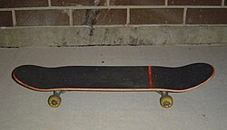

Equipamentos
Ver artigo principal: Esqueite (prancha)
Um skate pode ser composto por diferentes peças e apresentar diferentes características que lhe dão nomes diferentes, como: skate, longboard, skate oldschool, surf skate ou simulador de surf, cruiser, tubarão etc.[7]

Há de se destacar que apesar de ser comum atribuir diferentes usos a cada tipo de skate por conta das especificidades de cada modalidade, nada impede que, por exemplo, uma pessoa pratique street ou vertical com longboard, tipo de skate geralmente associado as modalidades de ladeira[6] e assim por diante.